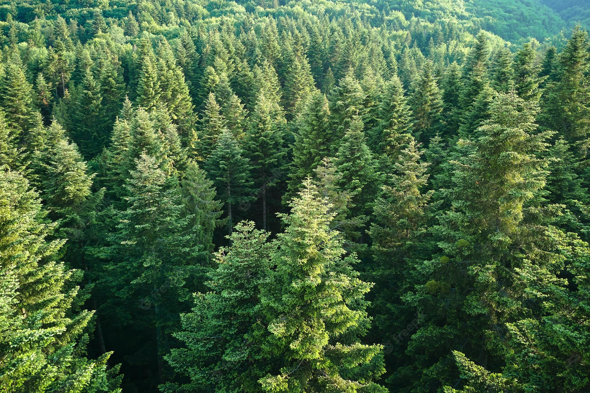
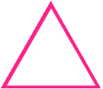

Спортивное ориентирование — вид спорта, в котором спортсмены с помощью компаса и карты ищут расположенные на
местности контрольные пункты. Соревнования проходят в городе или на природе.
Победителем становится участник, который находит все пункты и приходит к финишу первым. Самые важные
качества ориентировщика: скорость прохождения дистанции, и точность выбора маршрута.
Что такое Спортивное ориентирование?


Это интересный и увлекательный вид спорта
Где ты сможешь научиться ориентироваться и не только
Спортивное ориентирование подходит и взрослым, и детям